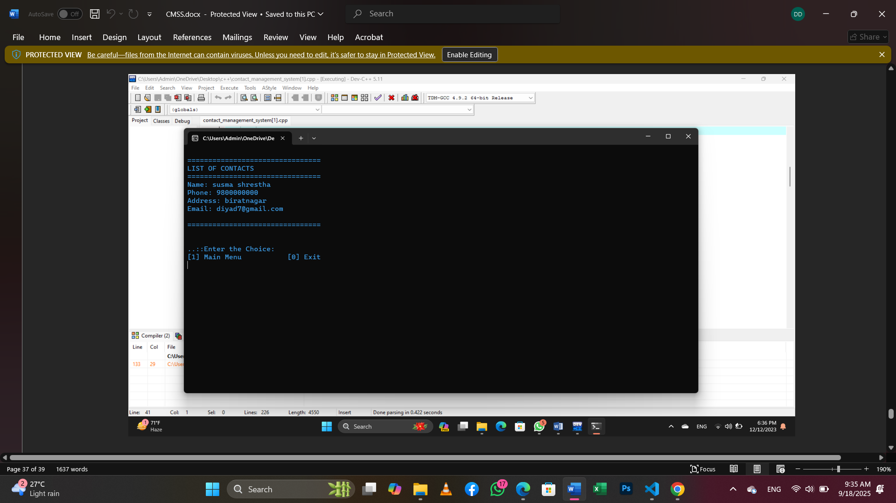
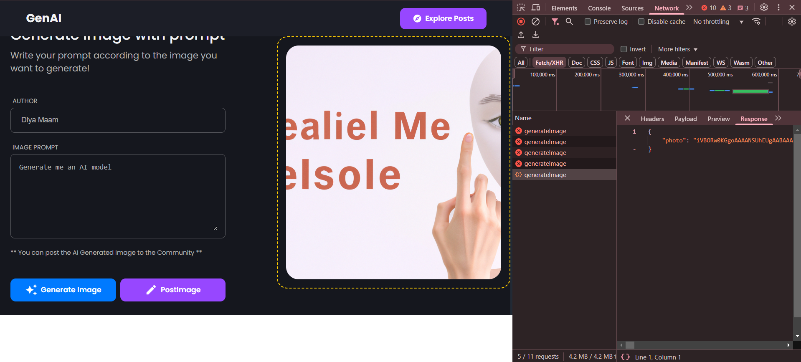
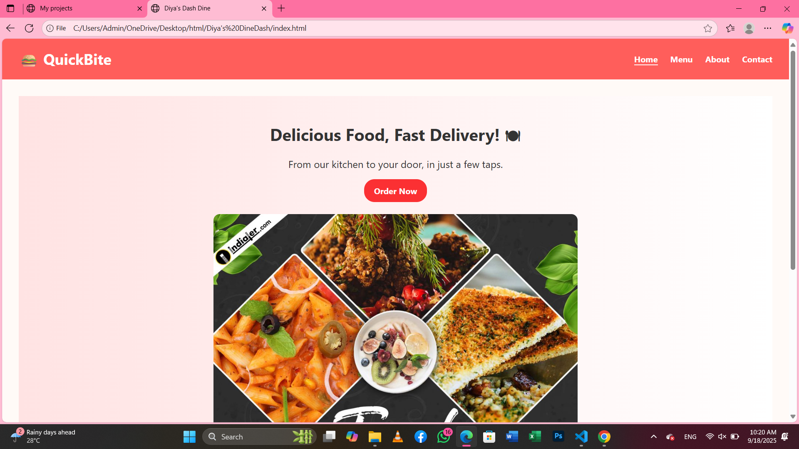
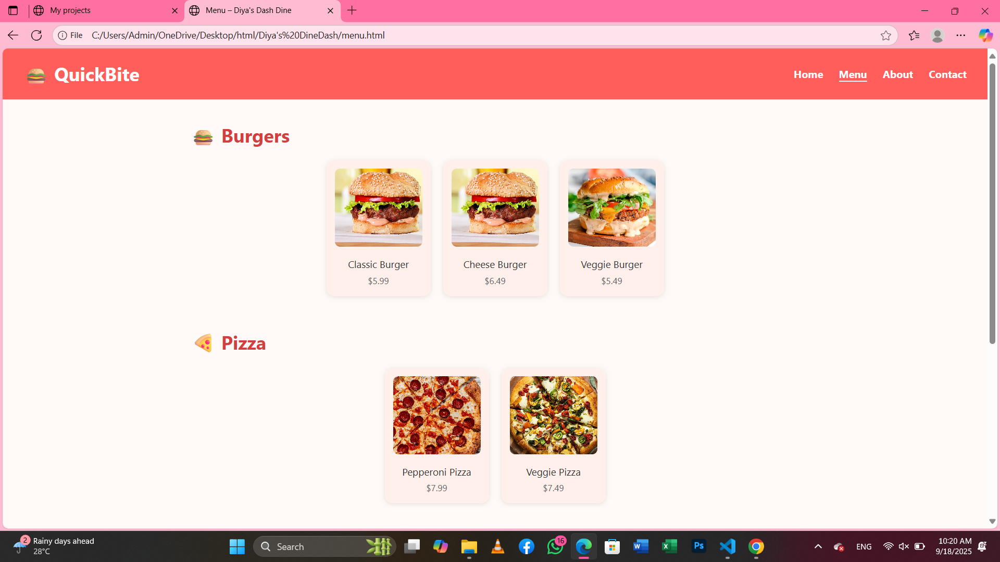

As a computer engineering student, I’m learning web development step by
step and creating projects that reflect my growth.
From designing portfolio websites with HTML & CSS to experimenting with
React by building a personal planner app,each
project shows how I’m combining creativity with technology. I’m still
learning with the flow — exploring new tools,
improving my coding
skills, and planning to learn Java to strengthen both my web development
and programming foundation.
Projects I Have Done :
-
Contact Management System
This was my first project during the 3rd semester, built using C++ in Dev C++. The system allows users to add, search,

update, and delete contacts, storing the information efficiently using file handling. Through this project, I learned essential
programming concepts such as data structures, CRUD operations, and logical problem-solving. It was my first real experience
turning code into a functional application and gave me the confidence to take on more complex projects in web development and beyond. -
AI Image Generation
This 5th-semester project is a web application that allows users to create images from text prompts using AI. Built with MongoDB,

Express.js, React, and Node.js, it features a user-friendly interface where generated images can be viewed, saved, or downloaded.
The project helped me gain practical experience in full-stack development, API integration, database handling, and connecting a
web app with AI services, giving me valuable insights into modern web development workflows. -
Diya's Dine Dash
This project is a food-themed web application that I built using HTML, CSS. It allows
 
users to browse dishes, view menus, and interact with the interface in a playful and engaging way. Displaying a menu of dishes with
images and descriptions. Interactive elements like buttons, hover effects, and dynamic content.